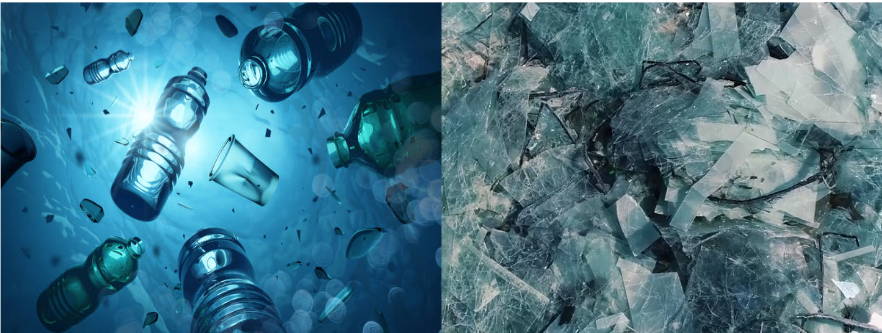

A guide to non-hazardous waste!(Especially for solar companies)

Contact detaills-
Hi, I am Adithya, the creator of this webiste. If you have any querries, send a mail to me:
adithyabangolae2008@gmail.com
introduction to non-hazardous waste
Managing non-hazardous waste
Citations
recykal.com
idrenvironmental.com
Encyclopedia.com
pulpandpaper-technology.com
nationalgeographic.com
plastichealthcoalition.org
unep.org
unep.org
agc-glass.eu